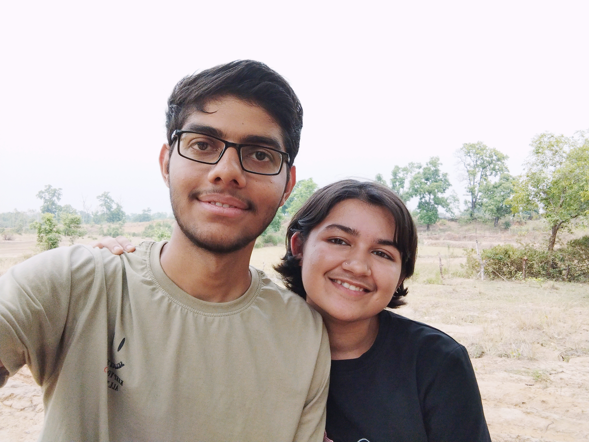

28/30 may 2022
In dono dates ko sath merge kar rha kyuki thodi thodi si hi likhne layak baatein hain dono me.
Tujhe yaad hai boards shuru hone k pehle school me shaam ko extraclass lagti thi, jinme kuch logo
ka ana compulsary tha aur baki apni marzi se koi bhi ja sakta tha. Tu usme jaya karti thi aur mai nhi.
to ek din Aniket kumar na tere sath photo khichaya(tune usme vo skin colour wala top/T-shir pehna tha)
fir 2-3 photos ko apni story me bhi dala tha chota sa paragraph likh kar aur emoji lagakar, tab mujhe laga
ki yaar mujhe jana chahiye tha. Khair shaam ko tution bhi rehta tha aur gadi bhi roj nhi mil sakti thi isliye mai nhi
aya fir.

Fir board exams aa gaye... school me to mai mil leta tha tujhse, lekin ab exams me milna bhut thodi der k liye vo
bhi badi mushkil se hota tha to fir ye maths ki class k bahane milna jaruri hogaya tha mere liye
ghar walo ko pta nhi kya kya bolna pada tha tab jakr ane diye the, bol rhe the doubt to tution me bhi clear ho sakte
28 ko mai class aya(10 min late), tu vaha pehle se baithi hui thi shayad, fir mai baitha class shuru hui-fir class khatam hui
class khatam hone k baad hamlogo ko samajh aa rha tha nhi ki kya kare, fir shubham pandey ko mai gadi de diya aur humlog
aise hi chalne lage, fir ghosh mam ki line me pahuche tab mai ek ajeeb sa bahane ki madad se hath pakadne ki koshish kiya
aur yaar to hasne lagi. Fir humlog hath pakad kar ghume kafi der tak aur kafi area bhi cover kiye. Mujhe to rasta malum tha nhi
ache se to bas baar baar yahi bol rha tha ki "shraddha apne ghar k pass mat le jana". Bahut garmi bhi thi, mujhe bahut
paseena bhi a rha tha, fir mujhe lagta hai tune apni hanky se pocha bhi tha
aur yaar bag shweta ka tha pura geela hoagaya tha mai tanga tha is wajah se. fir aise hi time nikal gaya fir dono ghar
chale gaye.
same story 30 tareek ki bhi, mai aya class chalu hui, mai ek easy sa question galat kardiya aur tera sahi hogaya, fir class khatam
hogayi
is baar mai socha tha ki shubham ko ghar chor dunga fir humlog colony se thodi dur chalenge, kyuki colony baitne layak
jagah bhi nhi thi aur dar bhi lagta vo alag. fir humdono gaye usi spot par kali mandir k peeche wale raste se
Tu black T-shirt pehni thi kyuki mujhe achi lagti hai

fir maine jo poem likhi thi usko padhe fir pata hai shraddha tujhe pta nhi yaad hai ya nhi lekin tune first
time us din ache se mere kandhe par sir rakha tha mujhe ache se yaad hai meri heartbeat bahut badh gayi thi...
fir humlogo ne baatein ki aur firse time hogaya.....fir hum dono wapas chale gaye...